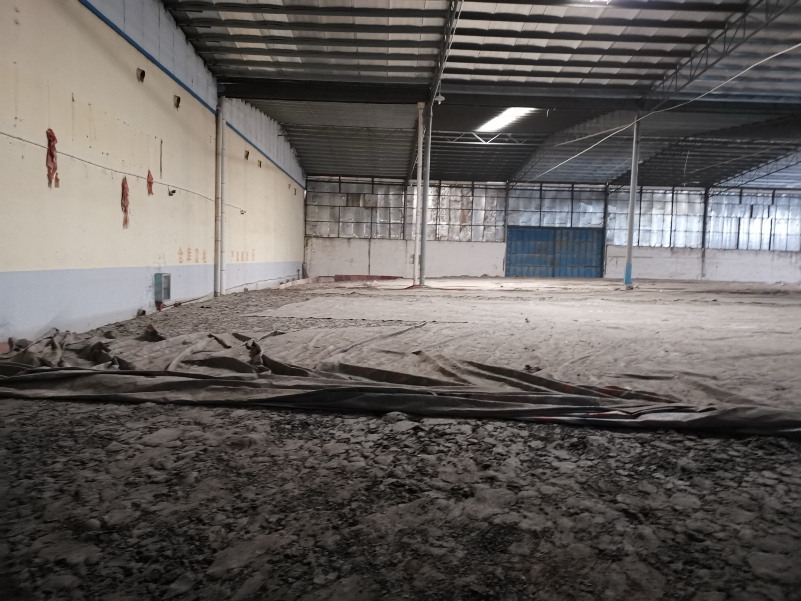
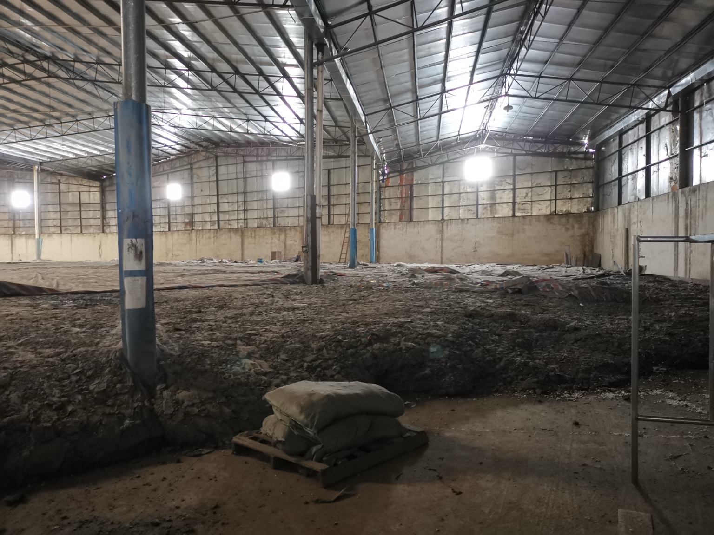
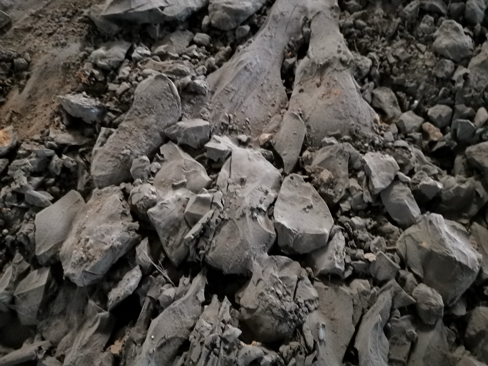
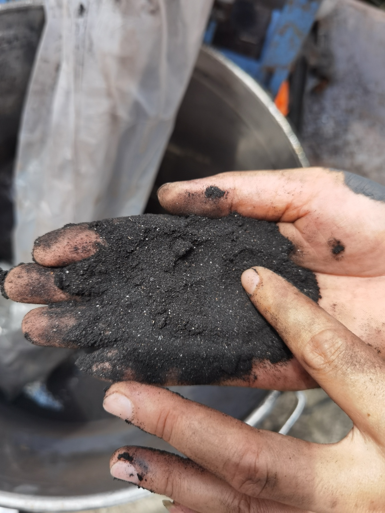
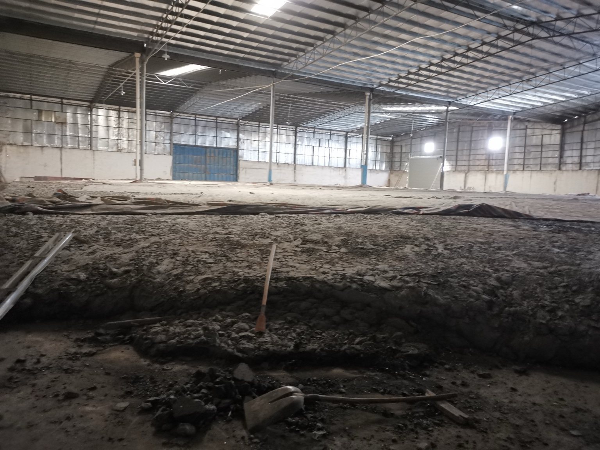
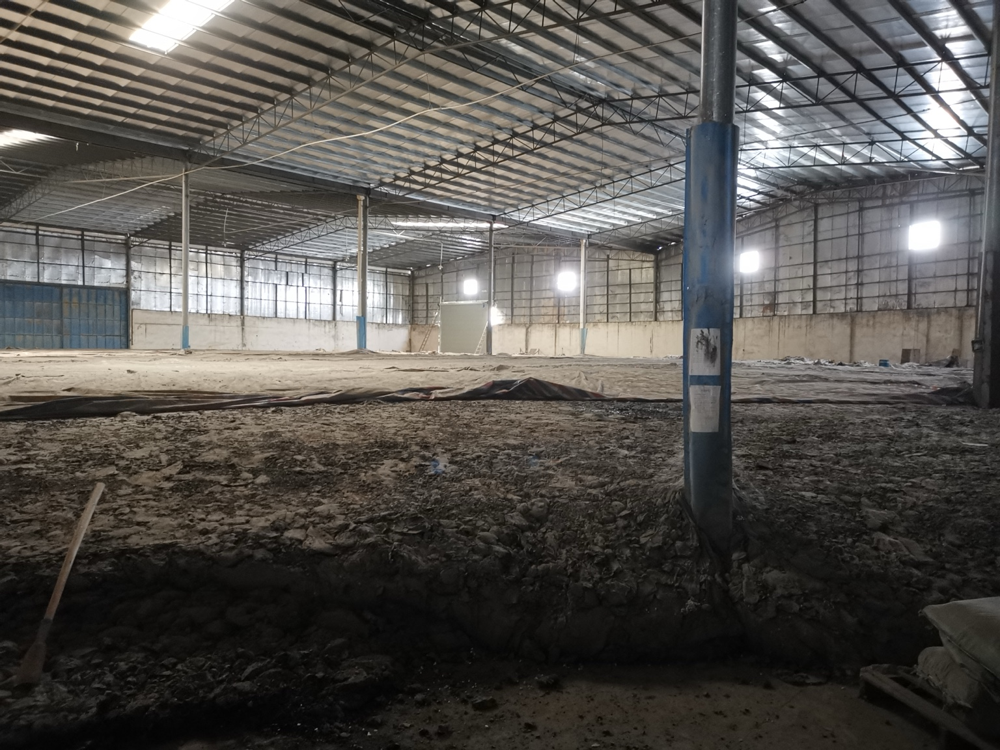

实施判断
具备热提纯研究价值，但不宜整批直接投产。
关键门槛
中试有效成品率达到70%左右，且调和后能稳定达标。
成本红线
综合加工成本超过1600元/吨原料时，需重新比较粉料兜底路线。
推荐结论
本批物料杂质和水分不均，最稳妥的做法是“覆盖防雨和机械预拣 → 100-300公斤小试 → 10-30吨中试 → 只处理高含油分区 → 批次检测销售”。若中试确认可回收沥青质高、过滤不严重堵塞、残渣含油可回收，则热提纯经济性通常优于低价磨粉。
必须修正的假设
不能按“损耗20%”直接核算利润。实际项目应拆分为水分蒸发、外来杂物、矿物残渣、设备挂壁和合格产品五类物料；成品也不能默认按普通70#重交沥青销售，应以检测和调和试验决定销售名称和价格。
工程可行性和数据准确性校核
| 校核项 | 专业判断 | 对方案的影响 |
|---|---|---|
| 市场价格 | 2026年二季度公开资讯显示国内70#道路沥青价格仍在约4200-4700元/吨区间波动，华南价格曾在4500元/吨附近；现货受原油、炼厂开工、库存和雨季需求影响较大。 | 网页采用3800、4300、4700元/吨三档敏感性，不再把4400元/吨作为固定利润。 |
| 产品标准 | GB/T 15180-2025《重交通道路石油沥青》已发布，实施日期为2025-09-01，替代GB/T 15180-2010。道路使用还需结合JTG F40和项目合同指标。 | 成品定位改为“直接重交沥青、调和沥青、天然改性组分”三选一，禁止未经检测冒称70#。 |
| 设备自制边界 | 常压料仓、常压沉降罐、篮式过滤器、保温管线和支架可考虑低成本制作；导热油炉、燃烧系统、承压部件、电气防爆、消防和环保设施不能随意自制。 | 所有图纸增加“不可省略安全部件”和“资质复核”提示。 |
| 融化温度 | 湖沥青和老化沥青软化、流动温度可能偏高，但长期接近195℃会增加老化、烟气和火灾风险。 | 采用110-150℃脱水软化、150-175℃常规融化、180-195℃短时高温的分段控制。 |
| 过滤策略 | 一次性精滤到过细不经济，容易形成高含油滤渣和堵塞停机。 | 采用“粗滤除大杂 → 沉降减负荷 → 二级热过滤”的组合，过滤精度由产品检测倒推。 |
现场照片嵌入区
以下照片已从此前下载的网页文件中提取并嵌入新版工程包。照片显示物料已板结连片、堆体高低不平且含泥砂石块，说明正式热提纯前必须设置分区取料、预拣、破碎筛分和预热脱水。






1. 低成本间歇式融化釜结构剖面图
建议两台并联，单釜有效容积25至35m³，单批15至25吨。采用导热油间接加热，慢速搅拌，上部抽取清料，底部集中排渣。
2. 预热脱水仓结构图
露天湿料不能直接进高温釜。预热脱水仓用于40至110℃缓慢排水，降低爆沸、喷料和过滤堵塞风险。
3. 双联粗滤器结构图
一级粗滤拦截碎石、金属和包装残片。双联结构可不停机切换，滤渣箱回滴附着沥青，降低带油损失。
4. 高温沉降罐结构图
沉降罐通过密度差降低精滤负荷，比一味加细滤网更经济。建议两台并联，一台进料、一台沉降抽取。
5. 二级热过滤装置结构图
先2至3mm保护过滤，再0.5至1.5mm精滤。精度按产品用途倒推，不宜盲目追求过细导致压差高、耗材贵、带油多。
6. 热沥青抽取和回流管路图
管路设计目标是可抽取、可回流、可排空、可保温，避免长盲管和冷点凝堵。
7. 纯化料罐、调和罐、成品罐结构与连接图
每批纯化料先检测，再决定进合格罐或调和罐。不要未经检测直接混入大罐。
8. 整套设备平面布置和物料流向图
低成本项目的平面布置要减少热料距离，把破碎粉尘区、热加工区、罐区、残渣区和人员通道分开。
成本、进度和决策门槛
单吨加工成本控制
| 项目 | 目标范围 |
|---|---|
| 挖掘、转运、分拣 | 50-100元/吨原料 |
| 破碎和筛分 | 60-120元/吨原料 |
| 预热脱水和熔化能源 | 180-350元/吨原料 |
| 人工、过滤、维修、环保、残渣 | 230-600元/吨原料 |
| 设备折旧或租赁、检测等 | 200-400元/吨原料 |
| 综合目标 | 约800-1300元/吨原料，先由10-30吨中试校正 |
六个月实施安排
| 阶段 | 工作 |
|---|---|
| 第1-2周 | 覆盖防雨、分区、取样、检测 |
| 第3-4周 | 100-300公斤小试，确认起泡、沉降和过滤特性 |
| 第2个月 | 10-30吨中试，完成物料衡算、能耗核算、成品调和试验 |
| 第2-3个月 | 设备定型、采购或租赁、安装联动试车 |
| 第3-5个月 | 30-40吨/日分批生产，边检测边销售 |
| 第6个月 | 尾料处理、清罐、残渣处置、场地恢复 |
经济敏感性测算
以下按2000吨原料、暂不计原库存账面成本、税费、资金占用和外部运输费用测算。由于沥青现货价格波动，实际谈判应采用“基准价+升贴水+质量扣减”的合同方式。
| 情景 | 有效成品率 | 成品销售价 | 加工成本 | 估算收入 | 扣加工费后余额 | 判断 |
|---|---|---|---|---|---|---|
| 谨慎 | 55% | 3800元/吨 | 1500元/吨原料 | 418万元 | 118万元 | 若粉料路线净回收更高，应停止全面提纯。 |
| 中性 | 70% | 4300元/吨 | 1200元/吨原料 | 602万元 | 362万元 | 具备实施价值，但需锁定销路和质量指标。 |
| 积极 | 80% | 4700元/吨 | 1000元/吨原料 | 752万元 | 552万元 | 优先热提纯，并尽快分批销售。 |
中试验收清单
- 每个原料分区完成含水率、灰分/不溶物、有效沥青回收率检测。
- 10-30吨中试做完整物料衡算：投入、成品、湿残渣、干残渣、水分、设备残留。
- 记录每吨原料燃料或电耗、导热油温度曲线、脱水时间和起泡情况。
- 记录粗滤、沉降、精滤各段压差、堵塞频率、清理时间和滤渣含油率。
- 成品检测针入度、软化点、延度、黏度、闪点、密度、加热损失和老化后性能。
- 完成与70#或90#基质沥青10%、20%、30%、40%比例调和试验。
- 废气收集、冷凝液、隔油池、含油残渣和废滤材形成合规处置路径。
- 确认消防、防烫、急停、联锁、作业票和人员防护用品到位。
不得省略的安全环保底线
| 类别 | 最低要求 | 原因 |
|---|---|---|
| 脱水 | 湿料必须经预热脱水，确认无明显蒸汽和夹水后再入釜。 | 防止水急剧汽化导致喷料、冲料和灼伤。 |
| 加热 | 采用导热油间接加热，导热油炉、燃烧器和热油系统由资质单位设计安装。 | 降低明火直烧、局部结焦、导热油泄漏和火灾风险。 |
| 废气 | 熔化釜、沉降罐、储罐、过滤器和装车口废气统一收集处理。 | 控制沥青烟、油雾和VOCs，便于监测和验收。 |
| 排渣 | 热渣先回滴回收附着沥青，冷却后分类检测和处置。 | 提高提纯率，避免含油残渣随意外运造成环保风险。 |
| 电气消防 | 热加工区设置急停、可燃气体监测、灭火器材、消防通道和高温防烫隔离。 | 热沥青和导热油系统的事故发展快，必须提前隔离和联锁。 |
参考依据和市场校核
标准依据：GB/T 15180-2025《重交通道路石油沥青》已于2025-02-28发布，2025-09-01实施；交通运输部公告发布的JTG F40-2004《公路沥青路面施工技术规范》自2005-01-01施行，仍是道路沥青施工和材料应用的重要依据之一；沥青烟有组织排放可参考HJ/T 45-1999《固定污染源排气中沥青烟的测定 重量法》进行监测。
市场校核：公开资讯显示，2026年4月华南沥青市场价格曾在约4530-4558元/吨附近，山东、华东、华北等区域存在明显价差；2026年6月公开报价中70#沥青也出现4200-4500元/吨左右的卖盘。由于价格持续波动，本方案只采用区间测算，不把某一天的报价作为最终销售依据。
网页参考来源：国家标准信息公共服务平台、交通运输部政府信息公开、生态环境部标准页面、隆众资讯公开市场文章、生意社公开报价页面。正式投资决策前，应补充当地现货报价、客户合同指标、第三方检测报告和设备厂家正式报价。